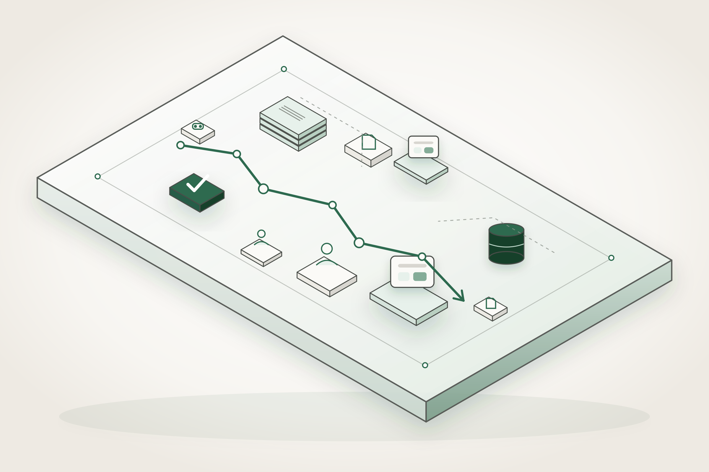
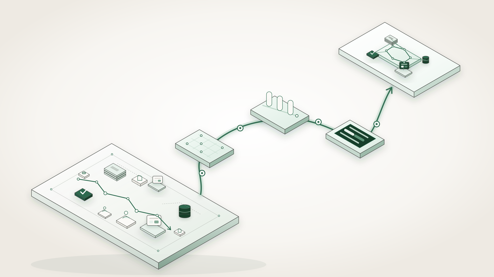
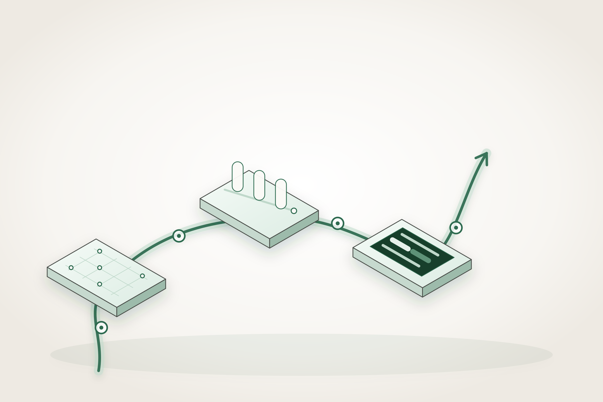
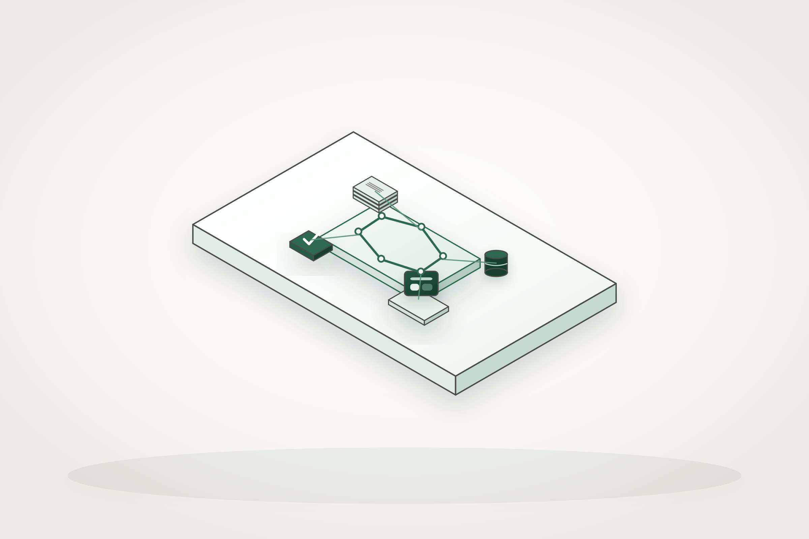
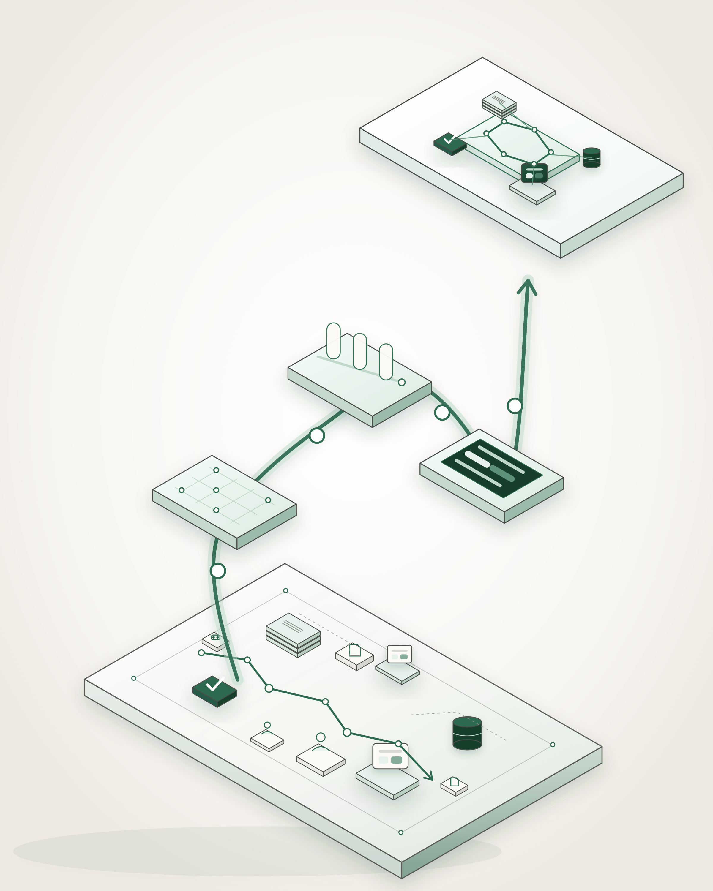

01 · CONTEXTO
Realidad operativa
Documentos, herramientas, datos, personas, validaciones y un proceso existente.
Una composición isométrica ascendente: la realidad operativa entra abajo a la izquierda, atraviesa tres capacidades equivalentes y emerge como un sistema coherente.
Masa asimétrica, ritmo, escala y una dirección de lectura natural. El contexto ancla la escena; el sistema final es más ligero y resuelto.

Cada zona se genera, corrige y recorta por separado. El arco central no comparte plataforma: estrategia, IA y producto avanzan sobre un mismo rail y conservan el mismo peso.

Documentos, herramientas, datos, personas, validaciones y un proceso existente.

Estrategia y arquitectura, IA supervisada, producto y software.

Un flujo coherente con interfaz, conocimiento, datos y validación.
La versión 4:5 comprime el arco en una S vertical, conserva las tres capacidades y aumenta la separación entre contexto y sistema.

Más trabajo, pero con control real de la dirección de arte.
Cuatro referencias Tahona de resina. La referencia externa no entra en el estilo.
Generar contexto, arco de capacidades y sistema con sus planos específicos.
Inpainting, eliminación de fondo, igualdad de cámara y contraste.
Componer, ajustar profundidad y hacer que el rail conecte sin dominar.
No se integra en la homepage por aproximación. Tiene que superar estos criterios en el render final.